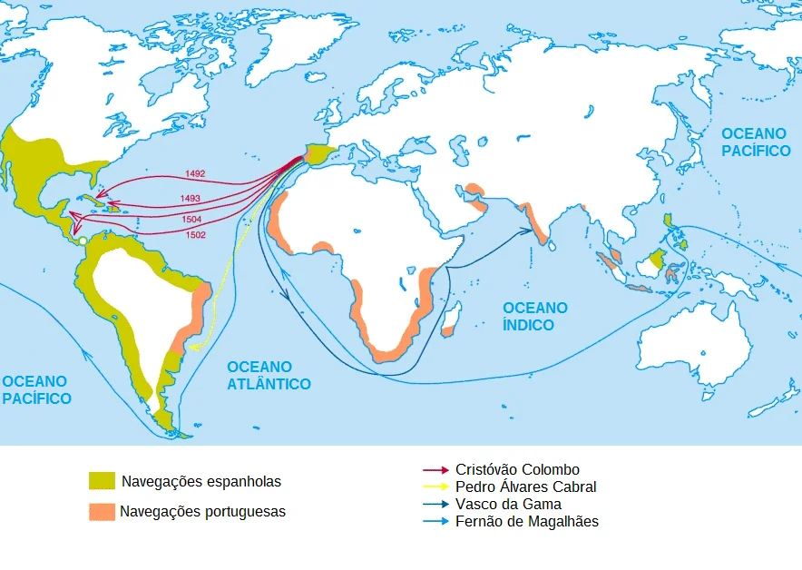

Contexto A chegada dos portugueses ao Brasil é um dos resultados finais das grandes navegações, a exploração oceânica que se deu ao longo de todo o século XV. Apesar dos espanhóis terem chegado ao continente americano primeiro, os portugueses são considerados os pioneiros nesse processo de exploração, fazendo grandes “descobertas” nesse período.
O papel pioneiro dos portugueses foi estudado pelos historiadores e justificado com base em fatores políticos, econômicos e geográficos. Primeiro ponto de destaque refere-se à estabilidade política e ao fato de que Portugal tinha um território unificado havia séculos. No caso territorial, os portugueses tinham expulsado os mouros, em 1249. Em comparação, a Espanha, por exemplo, lutou contra os mouros até 1492, e ingleses e franceses lutaram entre si, na Guerra dos Cem Anos, até 1453.
Além de ter um território consolidado, Portugal desfrutava de uma política estável e sem conflitos desde que a dinastia de Avis iniciou-se, no final do século XIV, quando João, mestre de Avis foi coroado rei de Portugal. A estabilidade política e o território unificado possibilitaram o país desfrutar de um desenvolvimento comercial e tecnológico.
Esse desenvolvimento tecnológico garantiu melhorias na navegação marítima cruciais para que os portugueses explorassem os oceanos. Essa exploração englobava os interesses de expansão comercial, militar e religiosa dos portugueses. Na questão comercial, os portugueses possuíam um centro comercial muito importante em Lisboa.
O interesse em mercadorias exóticas, como as especiarias (pimenta-do-reino e canela, por exemplo), era o que mais movia os portugueses nesse contexto. A Índia possuía um vastíssimo mercado delas, motivando-os a manterem contatos comerciais com ela. Como a rota tradicional, passando por Constantinopla, havia sido fechada, era necessário explorar o oceano para achar uma nova passagem.
Para isso, Portugal decidiu explorar a costa do continente africano à procura de uma passagem que levasse à Índia. Essas expedições fizeram-nos chegar a lugares, como Madeira, Açores e Cabo Verde. Eles também fizeram a instalação de feitorias, isto é, entrepostos comerciais, ao longo da costa africana. O desejo de expansão também se deve ao fato de que os portugueses, enquanto cristãos, procuravam expandir seus domínios como maneira de promover a cristianização.
|
 |